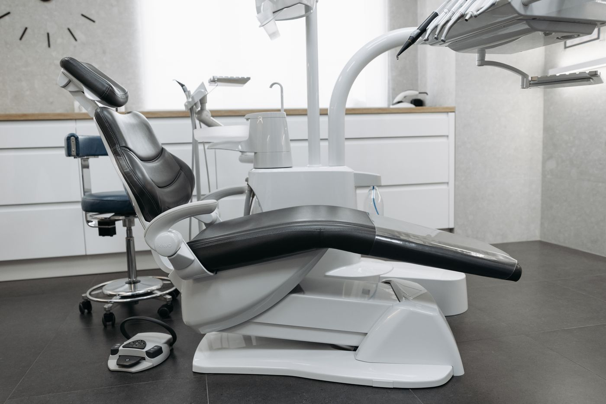

Консультация стоматолога
Осмотр и консультация врача-стоматолога.
первичный приём — 650 ₽прайс с 28.07.2025 · уточняется
Выберите направление, врача и удобное время — заявка придёт администратору в Telegram, он перезвонит и подтвердит приём.

Это концепт. С вашими фото и правками будет ещё лучше
Направления и цены «от» — из прайса на сайте клиники.
Осмотр и консультация врача-стоматолога.
Терапевтическая стоматология: диагностика и лечение заболеваний полости рта.
Снятие зубных отложений ультразвуком и пастами или Air Flow.
Профессиональное отбеливание системой Opalescence на две челюсти.
Ортопедическая стоматология: все виды протезирования.
Исправление прикуса — направление указано на сайте клиники.
Цены — из прайс-листа на сайте клиники «с 28.07.2025 г.». Как пишет клиника, окончательную стоимость лечения называет лечащий врач после осмотра и диагностики.
Направление → врач → время → телефон. Это рабочий макет: попробуйте.
Если не знаете, что нужно, — выберите консультацию: врач осмотрит и составит план.
Врачи — по странице «Специалисты». Можно не выбирать: администратор подберёт врача по направлению.
Время — по Красноярску. Пн–пт 9:00–21:00, сб 9:00–15:00, вс — выходной. В субботу вечернего приёма нет.
Так это будет работать: администратор получает заявку с направлением, врачом и временем и перезванивает, чтобы подтвердить приём. Сейчас это макет — ничего не отправлено и не сохранено.
Запишитесь сразу к своему врачу.
Стоматолог-терапевт, стоматолог-ортопед, директор.
Стоматолог-ортопед, стоматолог-терапевт.
Стоматолог-терапевт.
Стоматолог-терапевт.
Врачи и должности — со страницы «Специалисты» сайта клиники. Фото врачей и ортодонт — уточняются.
Только то, что опубликовано клиникой.
По сайту клиники: лицензия № ЛО-24-01-002042 от 27.09.2013. Скан — в разделе «Лицензии и сертификаты» клиники.
Имеются противопоказания, необходима консультация специалиста. План и стоимость лечения врач называет после осмотра.
Новая запись работает на поддерживаемой платформе: в заявке только направление, время и телефон — без сведений о здоровье.
Только то, что опубликовано на сайте клиники.
По прайсу с 28.07.2025: первичный приём (осмотр, консультация) врача-стоматолога — 650 ₽, повторный — 450 ₽. Актуальность уточняется.
Клиника пишет: окончательную стоимость лечения вы узнаете у лечащего врача после осмотра и диагностики.
Пн–пт 9:00–21:00, сб 9:00–15:00, вс — выходной (сайт и Яндекс Карты совпадают).
На сайте указано: медицинские услуги оказываются взрослому населению.
Красноярск, пр. им. газеты «Красноярский рабочий», 122. Пн–пт 9:00–21:00, сб 9:00–15:00.
Пн–пт 9:00–21:00 · сб 9:00–15:00
В Яндекс Картах указаны ещё два номера (+7 391 297-09-11, +7 902 927-09-11) — какой основной, уточняется. Имеются противопоказания, необходима консультация специалиста.